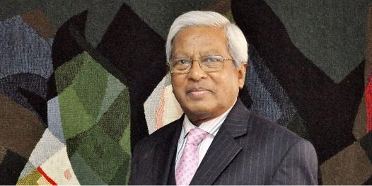

Sir Fazle Hasan Abed, KCMG
Sir Fazle Hasan Abed KCMG (27 April 1936 – 20 December 2019) was the founder of BRAC, one of the world's largest non-governmental organizations. Sir Fazle was honored with numerous national and international awards for his contributions in social development, including the LEGO Prize (2018), Laudato Si' Award (2017), Thomas Francis, Jr Medal in Global Public Health (2016), World Food Prize (2015), Spanish Order of Civil Merit (2014), Leo Tolstoy International Gold Medal (2014), WISE Prize for Education (2011) among others.